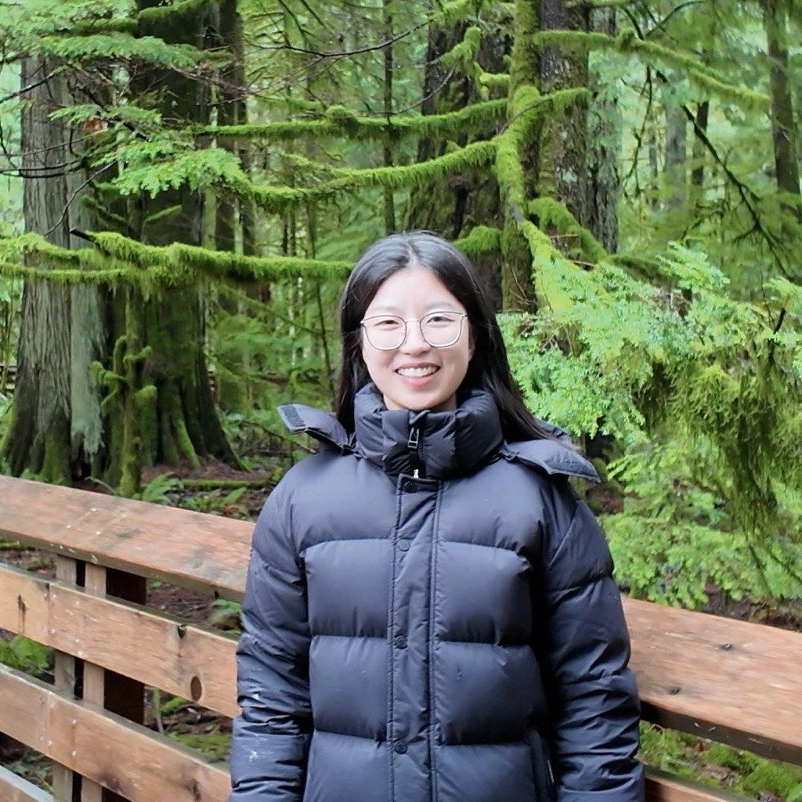
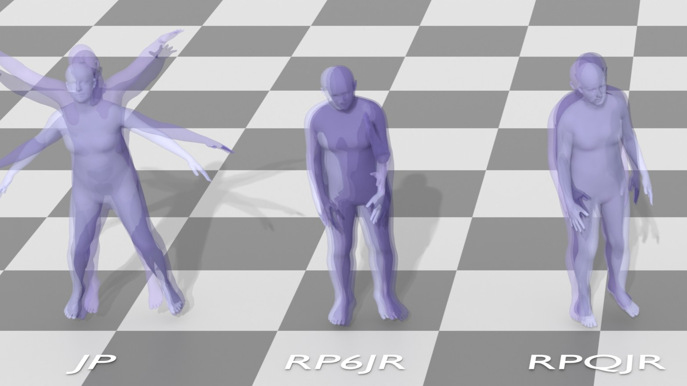
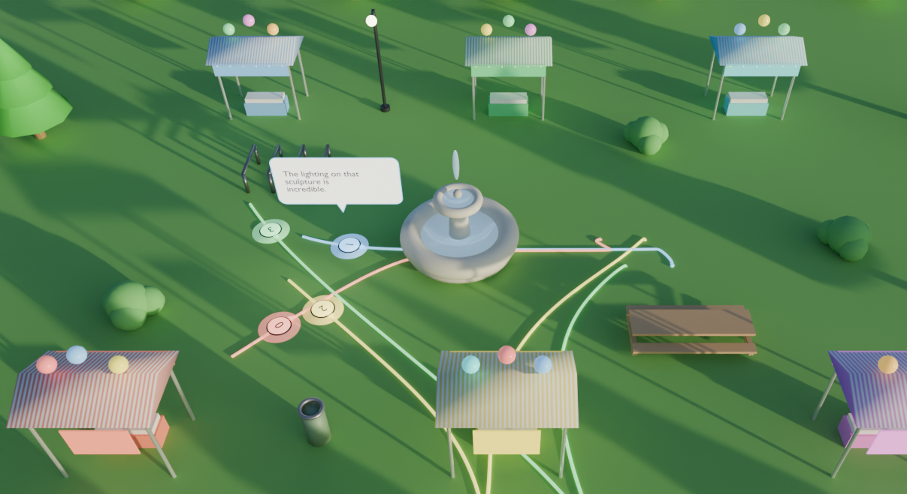
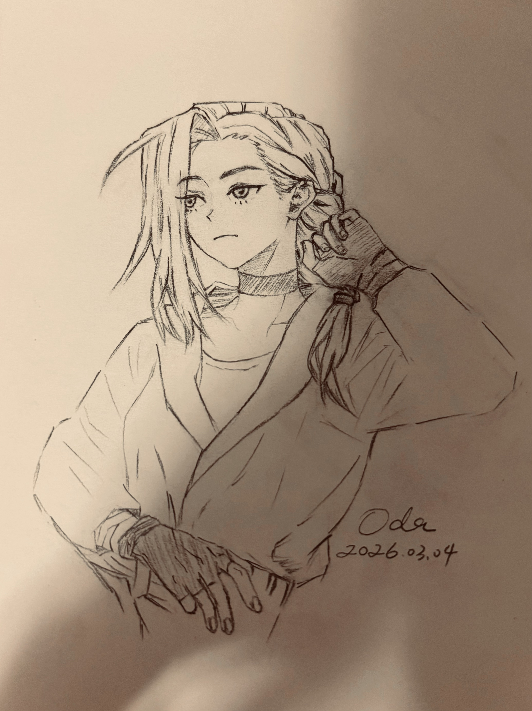
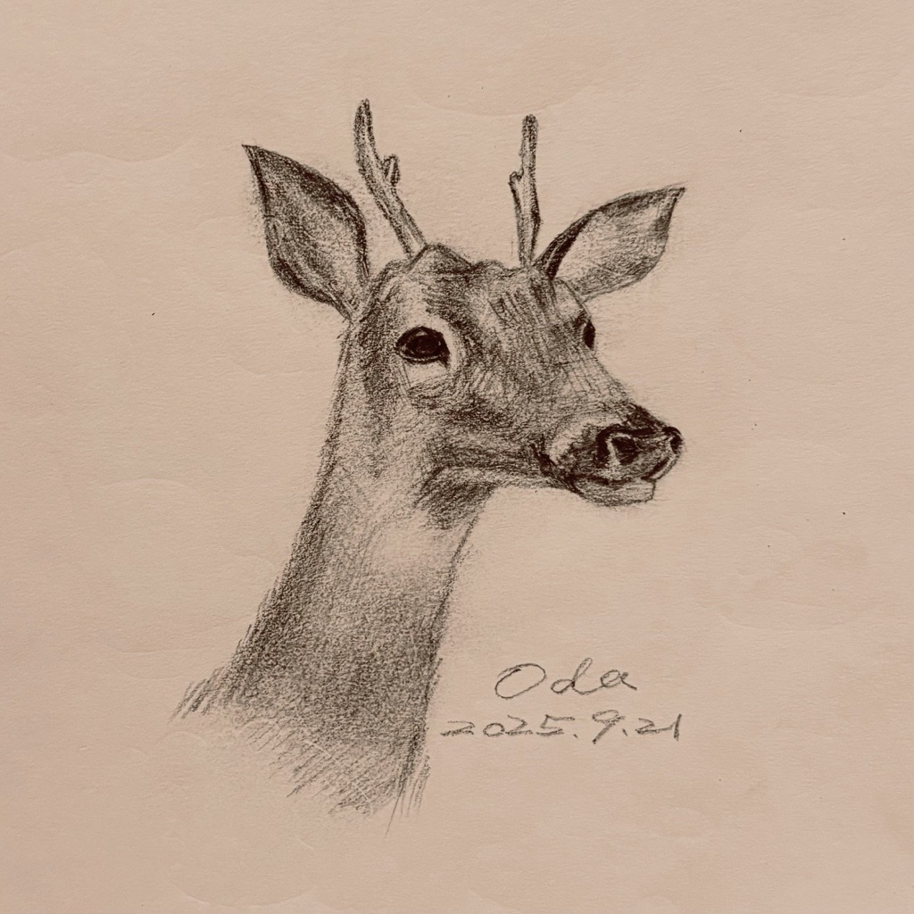
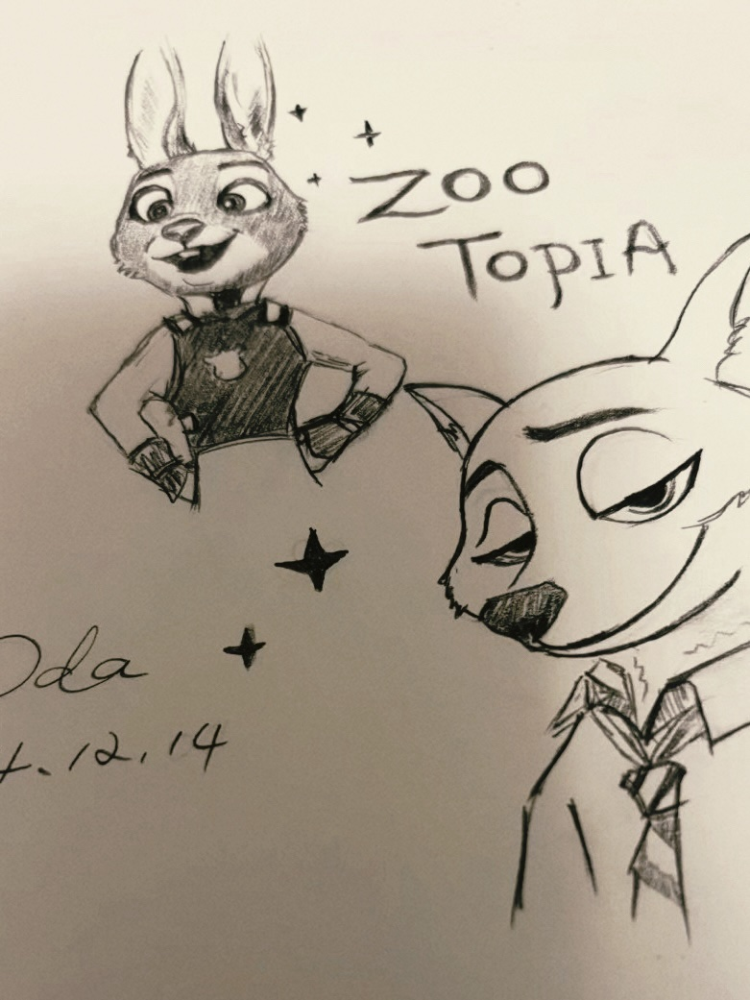

Yuduo Jin
I am a Ph.D. student at UVic specializing in generative models for human motion, mobility, and animation. My research interests include human motion synthesis, character animation, motion capture, human mobility, crowd simulation, and deep learning. I am interested in collaborating on research at the intersection of generative AI, 3D human motion, and computer graphics.

Flow with time. 
Yuduo (Oda) Jin is currently pursuing the Ph.D. degree in Computer Science at the University of Victoria, Canada. She is working in the GAIDG Lab under the supervision of Prof. Brandon Haworth. She received the B.Eng. degree in Digital Media Technology from Liaoning Normal University, China, in 2020, and the M.Eng. degree in Computer Technology from Northeastern University, China, in 2023. Her research interests include human motion synthesis (generation and prediction), motion capture, human mobility, character animation, crowd simulation, generative models, and deep learning.
Publications & Working Papers
* denotes equal contribution.

Back to Basics: Motion Representation Matters for Human Motion Generation Using Diffusion Model
City-Level GPS Trajectory Generation Using Tile-Conditioned Diffusion Model

Language-Driven Multi-Agent Model for Emergent Crowd Dynamics
Teaching & Academic Service
Teaching
- Teaching assistant, CSC305 Computer Graphics (2026)
- Teaching assistant, CSC305 Computer Graphics (2025)
- Teaching assistant, CSC473/573 Fundamentals of Computer Animation (2024)
Academic Service
- Reviewer, Annual Conference of the European Association for Computer Graphics (EG)
- Reviewer, ACM SIGGRAPH conference on Motion, Interaction and Games (MIG)
- Reviewer, Computer Animation and Virtual Worlds (CAVW)
Volunteer
- Student volunteer, SIGGRAPH 2026
- Student volunteer, SIGGRAPH 2025
Sketches


